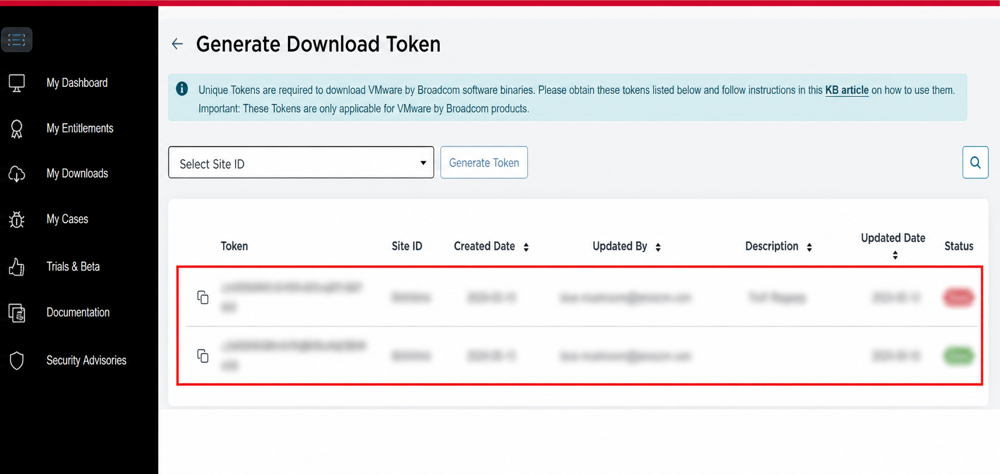
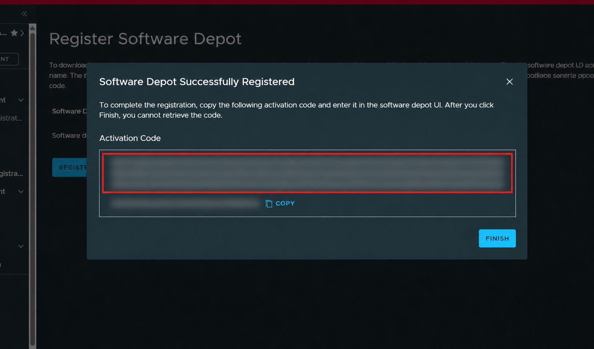
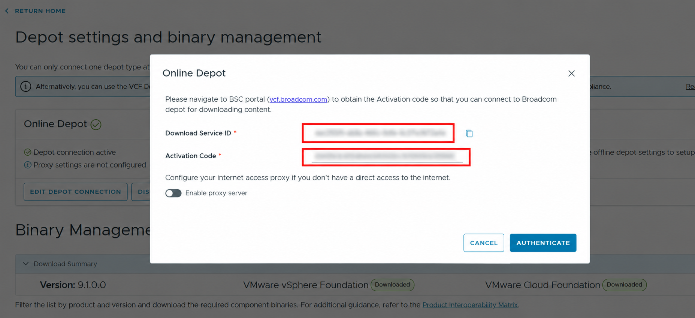

Screenshots are from a lab workflow and have been redacted. The point of this post is the operational difference between VCF 9.0 and VCF 9.1 depot setup, not the specific values from any environment.
The change that surprised me
I expected VCF 9.1 repository setup to feel mostly like VCF 9.0 with a newer version number. That was not quite true. The repository and depot mechanics are close enough to feel familiar, but different enough that muscle memory can send you looking in the wrong place.
In VCF 9.0, connecting the installer to the online depot was a direct token-based workflow. You generated or copied a Broadcom download token and entered it in the VCF Installer depot settings.
In VCF 9.1, the online depot workflow is more explicitly tied to the VCF portal. You register a software depot, receive an activation code, and use that with the Download Service ID shown in the installer.
VCF 9.0: the download-token model
The VCF 9.0 flow is straightforward. The installer asks for a Download Token from the Broadcom Support Portal. Once authenticated, the installer can talk to the online depot and download the required VCF and vSphere Foundation binaries.
That does not mean repository setup was always painless, but the identity object you cared about was obvious: get the download token, paste it into the installer, authenticate, and move on.

VCF 9.1: registration first, activation second
VCF 9.1 introduces a different mental model. Instead of treating the installer as the only place where the depot connection is defined, the workflow starts in the VCF portal. The portal has a Software Depot Registration workflow that represents the on-premises depot consumer.
After registration, the portal generates an activation code. Back in the VCF Installer, the Online Depot dialog shows a Download Service ID and asks for that activation code. The installer is no longer just asking, "What is your download token?" It is asking you to bind this installer-side depot service to a portal-side registration.


The comparison
The difference is small if you only describe it as "authenticate to the depot." It is much clearer when you look at what object is being handled by the operator.
| Area | VCF 9.0 | VCF 9.1 |
|---|---|---|
| Online depot credential | Download Token | Activation Code tied to a Download Service ID |
| Where the workflow starts | VCF Installer depot settings | VCF portal Software Depot Registration |
| Operator action | Generate or copy a token and authenticate the installer | Register the depot, copy the activation code, and activate the installer-side depot service |
| What can trip you up | Looking for the right token and entitlement path | Looking for a token when the installer is actually waiting on a portal registration flow |
Why this matters operationally
This is the kind of change that matters during an install because it happens before the interesting architecture work starts. If the depot is not connected, you are not downloading binaries. If you are not downloading binaries, bring-up does not move.
It also matters for documentation and runbooks. A VCF 9.0 runbook that says "enter the download token" is not specific enough for VCF 9.1. The VCF 9.1 runbook needs to say where the software depot is registered, who has access to that portal workflow, where the activation code is retrieved, and how that maps to the Download Service ID visible in the installer.
Offline depot changed too
The online workflow is not the only repository-related change. VCF 9.1 also changes the offline depot story with the Fleet Depot Service and improved HTTP offline depot support. That matters for connected sites, disconnected sites, and environments where repository access has to be staged, proxied, mirrored, or controlled.
The practical takeaway is that repository design is becoming more of a platform service in VCF, not just a one-time installer field. That is a good direction, but it means operators need to be precise about which version they are documenting.
What I would put in a runbook
For VCF 9.1, I would not document this as "configure the depot" and leave it there. I would split it into explicit checks:
- Confirm who has access to the VCF portal tenant.
- Register the Software Depot before trying to activate the installer.
- Capture the activation code at registration time.
- Match the activation code to the Download Service ID shown by the installer.
- Document whether the environment uses online depot access, offline depot access, or both.
- For disconnected or controlled environments, document the Fleet Depot Service path separately from the installer UI path.
The lesson
VCF 9.1 did not just move a field around in the UI. It changed the operating model for repository setup. The 9.0 pattern was token driven. The 9.1 pattern is registration and activation driven.
That is the part worth writing down. When the repository setup changes, the install runbook changes. The screenshots matter because the new VCF portal is still fresh, and most infrastructure teams are going to learn this workflow while they are already trying to get an environment built.